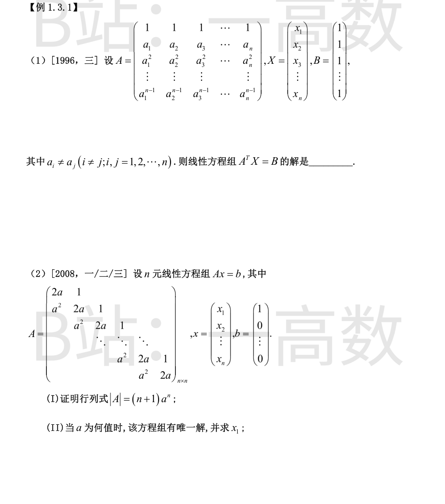
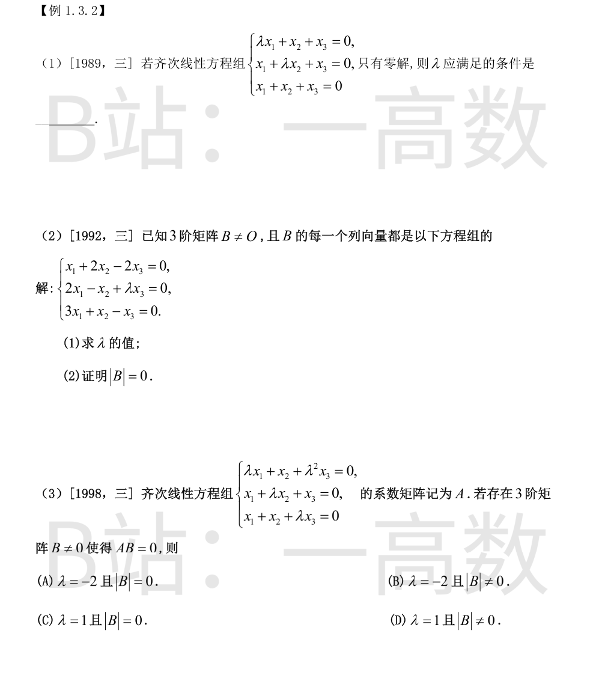

系数行列式 |A^{T}|=|A|=\prod_{1\le i<j\le n}(a_j-a_i)\ne0（a_i 互异），故方程组有唯一解。
取 X=(1,0,\cdots,0)^{T}，则 A^{T}X 为 A^{T} 的第一列，即 A 的第一行的转置 (1,1,\cdots,1)^{T}=B，故它是解；由唯一性它就是全部解。
（亦符合克拉默法则：把第 j 列换成全 1 后的范德蒙德行列式仅在 j=1 时等于 D，其余为 0。）
(I) 记 D_n=|A|。按第一列展开（第一列为 (2a,a^2,0,\cdots,0)^{T}）：
$$D_n=2aD_{n-1}-a^2E,$$
其中 E 是划去第 2 行第 1 列后的 n-1 阶行列式，其第一行为 (1,0,\cdots,0)，再按第一行展开得 E=D_{n-2}。故
$$D_n=2aD_{n-1}-a^2D_{n-2},\qquad D_1=2a,\quad D_2=\begin{vmatrix}2a&1\\a^2&2a\end{vmatrix}=3a^2.$$
归纳证明 D_n=(n+1)a^n：n=1,2 已验证；设 D_{n-1}=na^{n-1}，D_{n-2}=(n-1)a^{n-2}，则
$$D_n=2a\cdot na^{n-1}-a^2\cdot(n-1)a^{n-2}=(2n-n+1)a^n=(n+1)a^n.$$
(II) 方程组有唯一解 \iff |A|=(n+1)a^n\ne0 \iff a\ne0。此时由克拉默法则，把 A 的第一列换成 b 后，行列式按第一列展开为 D_{n-1}，故
$$x_1=\frac{D_{n-1}}{D_n}=\frac{na^{n-1}}{(n+1)a^n}=\frac{n}{(n+1)a}.$$
（验证：n=2 时解方程组 2ax_1+x_2=1，a^2x_1+2ax_2=0 得 x_1=\tfrac{2}{3a}，与公式一致。）

齐次方程组只有零解 \iff 系数行列式 \ne0：
$$\begin{vmatrix}\lambda&1&1\\1&\lambda&1\\1&1&\lambda\end{vmatrix}=(\lambda+2)(\lambda-1)^2\ne0$$
（三行加到第一行提出公因子 λ+2 即得）。故 λ\ne1 且 λ\ne-2。
(1) B\neO 说明方程组有非零解（B 的非零列），故系数行列式为零：
$$\begin{vmatrix}1&2&-2\\2&-1&\lambda\\3&1&-1\end{vmatrix}=1\cdot(1-\lambda)-2\cdot(-2-3\lambda)+(-2)\cdot5=1-\lambda+4+6\lambda-10=5\lambda-5=0,$$
故 λ=1。
(2) 记系数矩阵为 A，由题设 AB=O。反证：若 |B|\ne0，则 B 可逆，于是 A=AB\cdot B^{-1}=O，与 A\neO 矛盾。故 |B|=0。
B\neO 且 AB=O 说明 Ax=0 有非零解，故 |A|=0：
$$|A|=\begin{vmatrix}\lambda&1&\lambda^2\\1&\lambda&1\\1&1&\lambda\end{vmatrix}=\lambda(\lambda^2-1)-(\lambda-1)+\lambda^2(1-\lambda)=(\lambda-1)[\lambda(\lambda+1)-1-\lambda^2]=(\lambda-1)^2=0,$$
故 λ=1。此时 A 各行均为 (1,1,1)，r(A)=1<3，确有非零解，满足题意的 B\neO 存在。
若 |B|\ne0，则 B 可逆，A=AB\cdot B^{-1}=O，矛盾；故 |B|=0。选 (C)。